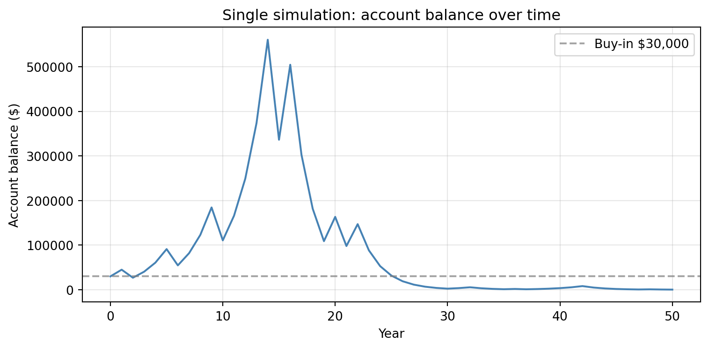
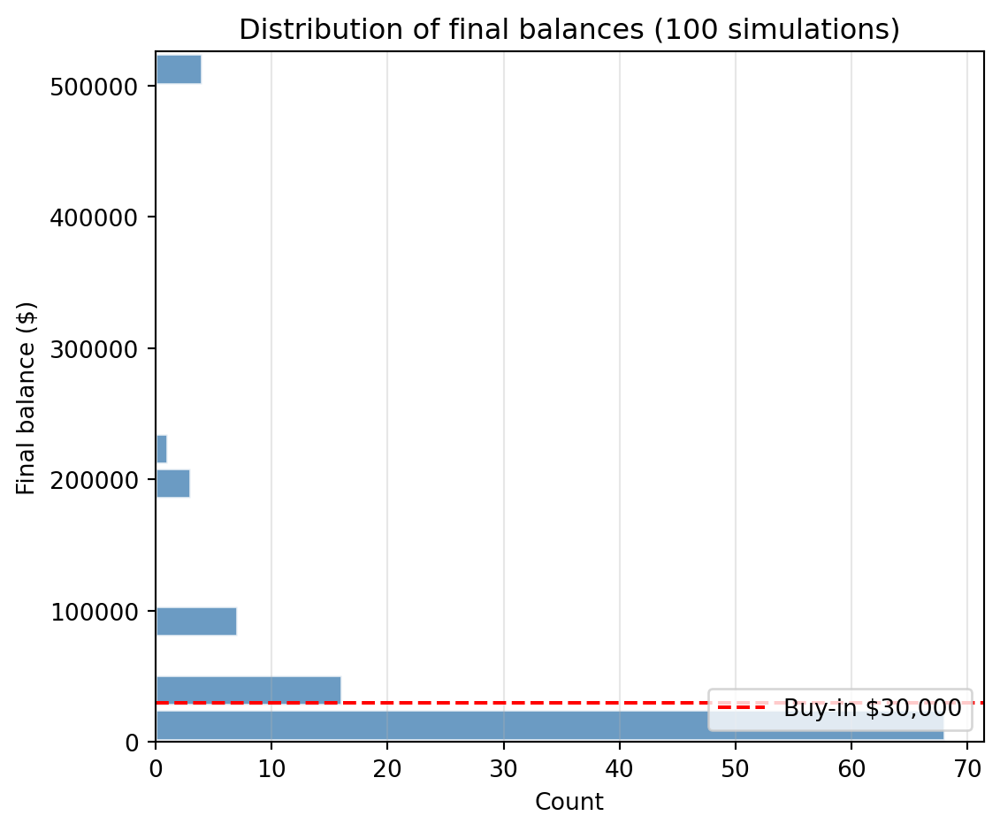
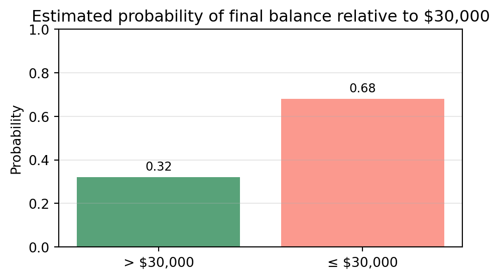
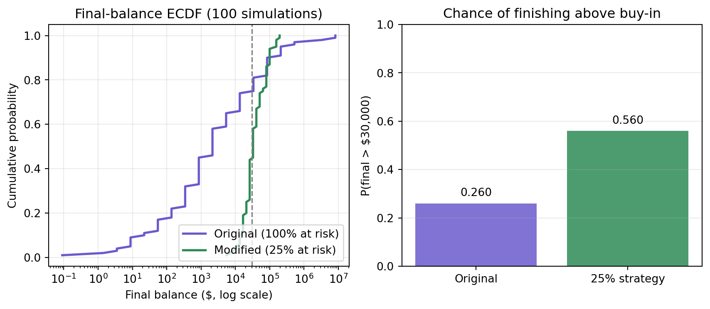

Simulation Challenge
Starter Template with To-Dos
🎲 Simulation Challenge - Starter Template
The Investment Game (Brief)
You have the opportunity to buy-in to this game next week with $30,000. Your job is to analyze the potential outcomes of the game and communicate why you should or should not buy-in.
Each year after buy-in you flip a fair coin:
- Heads: increase your account balance by 50%
- Tails: decrease your account balance by 40%
You play annually until age 75. Your mission is to analyze outcomes and communicate insights clearly.
Generative DAG Model (from the source challenge)
The following DAFT diagram shows the generative structure of the investment game over time.
Analysis Tasks (Fill These In)
1) Expected Value After 1 Flip
Explain whether the expected value of your account balance after one flip is greater than, equal to, or less than $30,000. What is the gain in expected value as a percentage of your buy-in? Based on this simple analysis, state whether you would recommend buying into the game and why.
31500.0After one flip, the investment has two equally likely outcomes: a 50% gain to $45,000 or a 40% loss to $18,000. Averaging these outcomes yields an expected value of $31,500, which is greater than the $30,000 buy in and represents a 5.0% increase in expected value.
Based on this one period expected value calculation alone, the game is favorable, since the average outcome exceeds the initial investment. Therefore, I would recommend buying in on the basis of expected value alone.
However, this conclusion is limited to a single flip, longer year play risks and the possibility of substantial losses will need to be evaluated before making a final decision
2) Single Simulation Over Time (Narrative + Plot)
Narrate and visualize what happens to your account balance over the course of one simulation run. Describe the trajectory and state whether you would be satisfied with this particular outcome. Explain your reasoning.

This simulation above shows one possible trajectory of the account balance over a 50 year period. Each year’s change reflects the outcome of a fair coin flip: a head increases wealth by 50 percent, while a tail reduces it by 40 percent. As a result, the path moves unevenly, rising sharply during stretches of heads and falling quickly when several tails occur in succession. The dashed line marks the $30,000 buy in, making it easy to see when the account is above or below the initial investment.
Based on this run, the account ends at about $3,000, far below the initial buy in, which is $30,000, so I would not be satisfied with this outcome. The path spends long periods below the starting value, and the final balance represents a substantial loss. This result shows how sensitive the game is to sequences of unfavorable flips, especially when losses compound over many years.
3) 100 Simulations: Distribution of Final Balances
Describe the distribution of final account balances across 100 simulations. Report the mean, median, and the probability of ending with more than your initial $30,000. Given these results, would you be satisfied with the likely outcomes? Explain your reasoning.
Mean final balance: 248234.0
Median final balance: 5384.0
Probability final > 30,000: 0.32
Across 100 simulated 50 year paths, the distribution of final account balances is extremely right skewed. Most outcomes fall far below the initial $30,000 buy in, while a small number of unusually successful paths pull the mean upward. The mean final balance is $248,234, but the median is only $5,384, indicating that the typical outcome is much lower than the average. The probability of finishing above the initial investment is 0.32, meaning that only about 32 percent of the simulations end with a profit.
This pattern reflects the multiplicative nature of the game over a long horizon: long sequences of tails can drive the balance down quickly, while the rare sequences of many heads are needed to generate very large final values.
Given these results, I would not be satisfied with the likely outcomes. The chance of ending above $30,000 is low, and the median path results in a substantial loss. Although a few extreme successes raise the mean, they are rare, and most investors would experience outcomes well below the buy in.
4) Probability Balance > $30,000 at Age 75 (Original Game)
Report the probability that your final balance exceeds $30,000. Interpret what this probability means for your investment decision—does this change your recommendation from Section 1?

Using the 100 simulated 50 year paths, the estimated probability that the final balance exceeds $30,000 is 0.32. The remaining 68% of paths finish at or below the initial buy in, indicating that losses are much more common than gains over this long horizon.
This probability reinforces the conclusion from earlier sections. Even though the one period expected value of the game is positive, the long run compounding process is dominated by sequences of losses, and most investors would end up with less than their initial $30,000.
5) Modified Strategy (Bet Exactly 25% Each Round)
Instead of having the full balance at risk with each coin flip, assume only 25% of your balance is gambled each year. Compare this modified strategy to the original game: Which is riskier? Which has better upside? Which strategy would you recommend and why?
Original strategy:
Probability final > 30,000: 0.26
Median final balance: 2154.0
98th percentile: 3384864.0
25% strategy:
Probability final > 30,000: 0.56
Median final balance: 32741.0
98th percentile: 156900.0
Understanding the Charts
The ECDF plot shows that the 25% strategy is much more stable than the original game. The green line is farther to the right and steeper, which means most outcomes are higher and less spread out. The blue line is flatter and stretches farther left and right, showing that the original strategy has much bigger losses for most paths but also a few extremely large gains.
The bar chart on the right confirms this pattern: the 25% strategy has a higher chance of finishing above the $30,000 buy in, while the original game is more like a lottery with rare but very large wins.
Conclusion
Comparing the two strategies highlights a clear trade off between risk and upside. In the original game, the entire balance is at risk based on the coin flip. If you get tails, your balance drops by 40%. This makes the strategy extremely volatile. In my simulation, the median final balance for the original strategy was only $2,154, and the probability of finishing above the $30,000 buy in was just 0.26. Although the original game occasionally produces enormous outcomes (the 98th percentile was about $3,384,864), these results are extremely rare and do not represent what most people will experience.
The 25% strategy is much more stable. Only a quarter of the balance is at risk each year, so a tails result only reduces the total balance by 10%. This makes the losses much easier to handle. In my results, the median final balance increased to $32,741, and the probability of ending above $30,000 rose to 0.56. This modified strategy still allows for growth, but its extreme upside is smaller (the 98th percentile was about $156,900).
Overall, I would choose the 25% strategy. It is substantially less risky and makes it more likely to end with more than the initial $30,000. While the original game offers higher lottery like upside, most investors would care more about the steady outcomes , and try to avoid those severe losses.
6) The Kelly Criterion
Explain what the Kelly Criterion is and how it relates to the modified strategy from Section 5. Does the Kelly Criterion support your recommendation?
（1）The Kelly Criterion is a rule that tells you what fraction of your money you should bet in a repeated game in order to maximize long run growth. It does not try to avoid all risk, but it tries to choose a betting size that is aggressive enough to grow wealth while still avoiding the chance of being wiped out.
（2）In this coin flip game, the Kelly fraction is much smaller than 100% because losing 40% on a tails outcome is very damaging. The optimal Kelly bet for this game is roughly in the range of 20–30%, which is close to the modified strategy in Section 5 where only 25% of the balance is at risk each year.
（3）Because of this, the Kelly Criterion supports the 25% strategy. The original game, which risks the entire balance every year, is far above the Kelly level and is too risky for long term growth. The 25% strategy is much closer to the Kelly recommendation and leads to more stable outcomes and a higher chance of finishing above the initial $30,000.